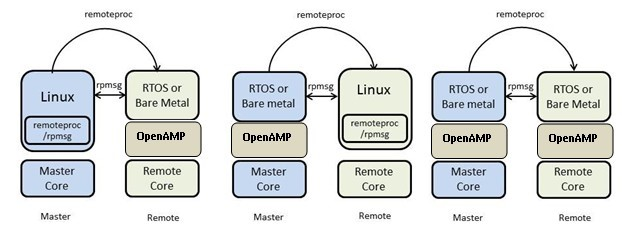

Components and Capabilities
The key components and capabilities provided by the OpenAMP Framework include:
remoteproc — This component allows for the Life Cycle Management (LCM) of remote processors from software running on a master processor. The remoteproc API provided by the OpenAMP Framework is compliant with the remoteproc infrastructure present in upstream Linux 3.4.x kernel onward. The Linux remoteproc infrastructure and API was first implemented by Texas Instruments.
RPMsg – The RPMsg API enables Inter Processor Communications (IPC) between independent software contexts running on homogeneous or heterogenous cores present in an AMP system. This API is compliant with the RPMsg bus infrastructure present in upstream Linux 3.4.x kernel onward. The Linux RPMsg bus and API infrastructure was first implemented by Texas Instruments.
Texas Instruments’ remoteproc and RPMsg infrastructure available in the upstream Linux kernel today enable the Linux applications running on a master processor to manage the life cycle of remote processor/firmware and perform IPC with them. However, there is no open- source API/software available that provides similar functionality and interfaces for other possible software contexts (RTOS- or bare metal-based applications) running on the remote processor to communicate with the Linux master. Also, AMP applications may require RTOS- or bare metal-based applications to run on the master processor and be able to manage and communicate with various software environments (RTOS, bare metal, or even Linux) on the remote processor.
The OpenAMP Framework fills these gaps. It provides the required LCM and IPC infrastructure from the RTOS and bare metal environments with the API conformity and functional symmetry available in the upstream Linux kernel. As in upstream Linux, the OpenAMP Framework’s remoteproc and RPMsg infrastructure uses virtio as the transport layer/abstraction.
The following figure shows the various software environments/configurations supported by the OpenAMP Framework. As shown in this illustration, the OpenAMP Framework can be used with RTOS or bare metal contexts on a remote processor to communicate with Linux applications (in kernel space or user space) or other RTOS/bare metal-based applications running on the master processor through the remoteproc and RPMsg components. Managing Remote Processes with the OpenAMP framework
The OpenAMP Framework also serves as a stand-alone library that enables RTOS and bare metal applications on a master processor to manage the life cycle of remote processor/firmware and communicate with them using RPMsg.
In addition to providing a software framework/API for LCM and IPC, the OpenAMP Framework supplies a proxy infrastructure that provides a transparent interface to remote contexts from Linux user space applications running on the master processor. The proxy application hides all the logistics involved in bringing-up the remote software context and its shutdown sequence. In addition, it supports RPMsg-based Remote Procedure Calls (RPCs) from remote context. A retargeting API available from the remote context allows C library system calls such as “_open”, “_close”, “_read”, and “_write” to be forwarded to the proxy application on the master for service. For more information on this infrastructure and its capabilities, see Figure 5-1 on page 60. In addition to the core capabilities, the OpenAMP Framework contains abstraction layers (porting layer) for migration to different software environments and new target processors/platforms.